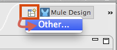
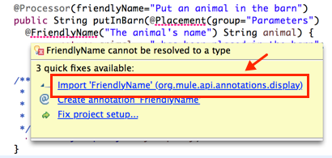

Creating an Anypoint Connector Project
Prerequisites
The DevKit documentation assumes you have:
-
A working knowledge of Mule, Anypoint Studio and Java development in general.
-
Explored the existing connectors.
-
Access to a sandbox environment for the target system or source, and documentation of the Web service it exposes.
-
A general familiarity with the Java language, specifically the use of Java annotations. DevKit’s functionality is exposed to connector developers through Java annotations that inject code into your connector classes. The injected code provides the interface between the connector and Mule that would otherwise require each connector developer to include extensive boilerplate code. This documentation explains each DevKit-specific annotation in the context of examples. If you are not familiar with annotations, refer to a brief explanation of Java annotations.
| To build connector projects, you must first install the Anypoint Connector DevKit Plugin into Anypoint Studio. |
Viewing the Connector Structure
This Anypoint Connector DevKit module includes an Eclipse perspective that displays all of the DevKit classes, properties, methods, processors, and configurable fields from all your connectors inside the selected project.
To configure DevKit View:
-
Click the Add View icon in the upper right of the screen and click Other.
 -
Click Devkit and OK to open the DevKit Perspective.

-
Click any item in the Devkit perspective to display the code which defines it, for example:

The DevKit view lets you:
-
Double-click a Configurable field or a method to easily navigate to the line of code where it is defined.
-
Check the name with which your operation is exposed in the XML.
-
Double-click an XSD name to see examples in the sample doc file.
-
Filter to find elements in your connector.
Using Auto-Completion
When editing your connector’s main Java file, the auto-complete function provides a scaffold structure for several common methods that you may want to add. These structures come with rudimentary Javadoc documentation, which you should populate so that your project passes build tests successfully and your connector’s users can access reference material about your connector.
With your cursor on the @Connector class or any other @ annotation, type CTRL + spacebar to view a list of suggested entries:

For more information on @Connector and other Anypoint Connector DevKit annotations, see the Annotation Reference.
Using Templates
Templates are customizable pieces of code that you can add to your connector, and which provide a basic structure for elements you commonly use. Type the name or part of it and press [Command | Ctrl ] + space to insert the template into the current Connector Class.
Available DevKit templates:
|
Add a configurable field. |
|
Add a DataSense operation. |
|
Add a processor to your connector. There are several options with different templates. |
|
Add a transformer method. Transformers convert one input to another. |
|
Add a configurable element to a REST-based connector, such as URI params, query params, or header params. |
|
Add a @RestCall processor. Note: REST-based connectors insert the @RestCall parameter when you create an Anypoint Connector Project. |
Installing or Updating Your Connector in Anypoint Studio
After coding your connector, you can install it in Anypoint Studio and give it a test drive. Once installed, you can use your connector in a Mule Project and verify that it works as you intended.
Copy Your Connector to Anypoint Studio
-
In the package explorer of Anypoint Studio, right-click your project root.
-
Select Anypoint Connector > Install or Update:
 -
At Check the items you wish to install, click Next.
-
At Review the items to be installed, click Next.
-
At Review Licenses, click I accept the terms of the license . agreement, and click Finish.
-
Restart Anypoint Studio.
Importing An Existing Connector Project
To import an existing connector project, click File > Import > Anypoint Studio > Anypoint Connector Project from External Location, choose a URL or a .zip file, and complete the wizard to locate and import the project.
See also: "Creating a Compressed Project File" in Packaging Your Connector for Release.
See Also
-
NEXT STEP: Continue to Choose and Implement your Authentication method for your API.
-
Learn more about the Connector Project structure.